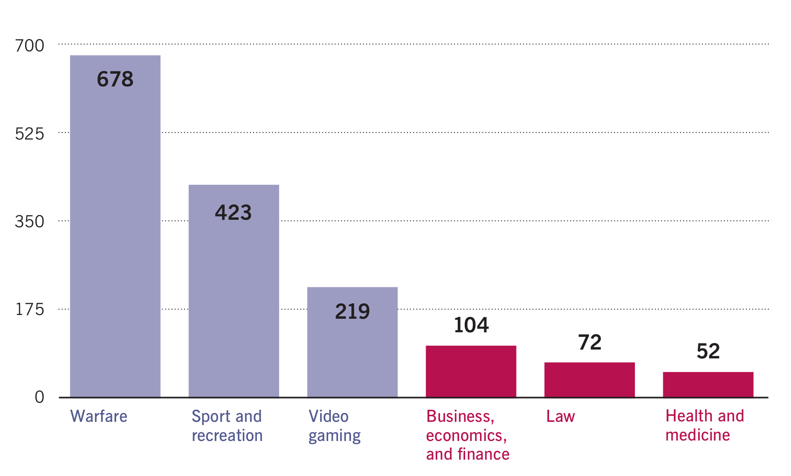
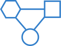
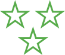
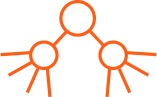
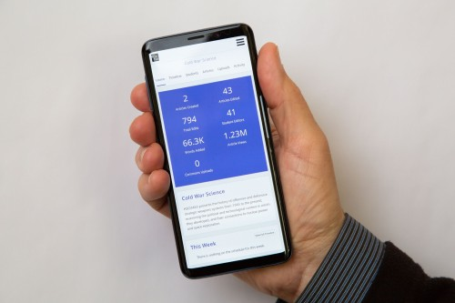

Yes, you see John Jay, John Adams, and Benjamin Franklin.
Wiki Education is working to ensure Wikipedia
is representative, accurate, and complete.
Wiki Education Strategy
for 2018-21
We are in the middle of a knowledge revolution
The instant availability of knowledge on your desktop, laptop, tablet, phone, or personal digital assistant has revolutionized how humans learn about the world around them in the last two decades.
When you Google a topic or ask Alexa a question, the answer you get often comes from Wikipedia, the long- form encyclopedia, or Wikidata, the structured open data repository for facts.
This content receives more than 15 billion page views each month, making it the world’s go-to source for information.
The public relies on Wikipedia and Wikidata
Whether you recognize it or not, you are using Wikipedia and Wikidata content daily in order to:

Wikipedia represents a powerful opportunity, perhaps only comparable to the creation of public libraries, for getting high quality knowledge out to the public. It combines the best standards for sourcing information with a system that allows for unprecedented reach. But we’re not there yet. Sometimes the knowledge you get from Wikipedia is great. But in many important topic areas, information can be unreliable, misleading, or missing.
Wikipedia’s highest quality articles often don’t meet your information needs
Which Wikipedia topic areas have the most Featured Articles?

Wiki Education ensures readers get the most
value out of Wikipedia and Wikidata.
Wiki Education improves Wikipedia and Wikidata
Since 2010, we have systematically improved Wikipedia content through collaborations with colleges and universities.
Our track record demonstrates we’re the only organization that can improve Wikipedia and Wikidata at scale. Wiki Education has:
This is our strategy for the next three years
We confirm our dedication to ensuring Wikipedia and Wikidata users get the information they need.
This plan captures our vision for the next three years. It articulates the work we will undertake, focusing on three key areas:
Wiki Education is committed to achieving
Equity
Increase knowledge equity by focusing on content and communities that are underrepresented on Wikipedia and Wikidata
Quality
Provide people who seek knowledge online with accurate information in topic areas that are underdeveloped
Reach
Reach large audiences with free knowledge by making Wikipedia and Wikidata more complete
Wiki Education Strategy for 2018–21
As more and more people use Wikipedia and Wikidata to make key life decisions, Wiki Education affirms its commitment to making this critical information more representative, accurate, and complete.
Strategic Goals
Goal 1
Equity
Increase knowledge equity by focusing on content and communities that are underrepresented on Wikipedia and Wikidata
Goal 2
Quality
Provide people who seek knowledge online with accurate information in topic areas that are underdeveloped
Goal 3
Reach
Reach large audiences with free knowledge by making Wikipedia and Wikidata more complete
Strategic Objectives
Content
Target content areas that are underdeveloped in order to reduce systemic bias on Wikipedia and Wikidata
1.1
Contributors
Attract content contributors from a wide variety of backgrounds, such as gender identity, ethnicity, sexual orientation, age, income, religion, etc.
1.2
Tools
Support knowledge equity efforts in the Wikimedia movement with tools and advice
1.3
Assessments
Develop and implement a method for assessing Wikipedia content quality on a regular basis, so that we and others can easily identify and target areas that need improvement
2.1
Partnerships
Partner with museums, archives, libraries, universities, and other traditional knowledge institutions to increase the amount of freely available high quality content
2.2
Infrastructure
Further develop infrastructure that enables us to scale the impact of our programmatic work
3.1
Page views
Recruit and support contributors who work on incomplete content that is in high demand
3.2
Structured data
Partner with knowledge institutions on improving structured data that reaches large audiences
3.3
Why Equity matters
The Assumption
Knowledge should represent the diversity of humankind.
Wikipedia’s volunteer base means its representation of knowledge is skewed. For example, only 17% of Wikipedia’s biographies are of women. This skew is a problem in traditional publishing too, and academia is beginning to embrace knowledge equity in their own work.
Others in our global movement are working on knowledge equity too.
The global Wikimedia movement is also embracing the need for knowledge equity, and program leaders worldwide are in need of program infrastructure to enact their equity projects.
The Implications for Wiki Education
More equity-focused courses taught at universities and more publications documenting the knowledge of historically underrepresented communities offer us collaboration opportunities. We will ensure equity is not only reflected in Wikipedia’s coverage, but also in the new contributors we bring to Wikipedia.
Wiki Education has been providing pro-bono technical support for others in our global movement through a separate version of our free and open source software platform since 2015. We will make tech support for programs in knowledge equity through our platform one of our core responsibilities.
We call this strategic priority “Equity”.
Goal 1
Equity
Increase knowledge equity by focusing on content and communities that are under- represented on Wikipedia and Wikidata
Strategic objectives
-
1.1Target content areas that are underdeveloped in order to reduce systemic bias on Wikipedia and Wikidata
-
1.2Attract content contributors from a wide variety of backgrounds, such as gender identity, ethnicity, sexual orientation, age, income, religion, etc.
-
1.3Support knowledge equity efforts in the Wikimedia movement with tools and advice
Measures of success
- Amount of content in equity topics added to Wikimedia projects
- Number of content contributors from underrepresented backgrounds brought to Wikipedia and Wikidata
- Increase in usage of Wiki Education tools by others in the Wikimedia movement
Why Quality matters
The Assumption
Wikipedia is the first and only place many people go for information.
Although Wikipedia content quality varies, no authoritative analysis into which topics are in most need of improvement exists.
While we know Wikipedia’s content gaps are rooted in the demographics of its editor community, much less is known about how quality varies across topic areas.
Traditional knowledge institutions have a lot to offer when it comes to providing Wikipedia’s readers access to accurate information.
In the past, we focused our efforts solely on universities. But institutions such as museums, libraries, and other organizations offer additional opportunities.
The Implications for Wiki Education
To date, we have relied on the expertise of long-time Wikipedia editors on staff to identify Wikipedia content gaps. Creating a more comprehensive and automated high-level quality review of Wikipedia’s content will help us form partnerships to systematically improve accuracy.
We will move beyond working solely with universities and seek partnerships with a wider range of traditional knowledge repositories. This will open up the opportunity to work hand in hand with knowledge partners beyond universities.
We call this strategic priority “Quality”.
Goal 2
Quality
Provide people who seek knowledge online with accurate information in topic areas that are underdeveloped
Strategic objectives
-
2.1Develop and implement a method for assessing Wikipedia content quality on a regular basis, so that we and others can easily identify and target areas that need improvement
-
2.2Partner with museums, archives, libraries, universities, and other traditional knowledge institutions to increase the amount of freely available high quality content
Measures of success
- Creation of Wikipedia content quality measurement by topic area
- Number of partners
- Amount of Wikipedia and Wikidata content improved through partnership work
- Change in the content quality in underdeveloped content areas
Why Reach matters
The Assumption
Wikipedia has become one of the most trusted online sources of information.
When people search for information, Wikipedia provides them with the facts they need in order to make their own best life choices.
Simultaneously, the way people interact with information and seek answers is transforming.
Whereas people used to find answers by running a Google search and reading Wikipedia, they’re now increasingly using intelligent personal assistants like Alexa or Siri.
But the answers you get reflect the gaps in Wikipedia and Wikidata content.
The Implications for Wiki Education
Wikipedia remains an important source of information for millions and millions of people. Wiki Education’s work will ensure Wikipedia’s depth and breadth of content is more complete, especially for highly viewed topics that are currently underdeveloped.
But with digital assistants and other devices relying increasingly on structured data (instead of relying solely on Wikipedia), we will expand our efforts to Wikidata.
We will provide people with more complete and reliable information, wherever and however they choose to access that information.
We call this strategic priority “Reach”.
Goal 3
Reach
Reach large audiences with free knowledge by making Wikipedia and Wikidata more complete
Strategic objectives
-
3.1Further develop infrastructure that enables us to scale the impact of our programmatic work
-
3.2Recruit and support contributors who work on incomplete content that is in high demand
-
3.3Partner with knowledge institutions on improving structured data that reaches large audiences
Measures of success
- Amount of content added to Wikipedia and Wikidata in underdeveloped content areas
- Page views of content improved through Wiki Education programs
You can help improve Wikipedia and Wikidata
We are seeking major gifts from foundations and individuals who want to make Wikipedia and Wikidata more representative, accurate, and complete.
To start a conversation about ways you can help improve the information millions of people rely on, send an email to:
Provide general operating support
General operating support fosters innovation by enabling us to respond more nimbly to promising opportunities and focus our precious staff time on increasing our impact. We are grateful that many of our existing and past supporters—including the William and Flora Hewlett Foundation, the Stanton Foundation, the Wikimedia Foundation, Google, and individual donors—recognize the importance of providing general operating support.
You can help make a difference for Wikipedia and Wikidata’s users. Your unrestricted gift will scale our impact and help us achieve our strategic priorities of equity, quality, and reach.
We recognize the value of philanthropic support, but are also working to ensure our own sustainability by developing a fee-for-service revenue model at universities we serve.
Wiki Education has successfully invested in developing a robust program management platform. This platform is used not only by Wiki Education to support our programmatic initiatives in the United States and Canada, but also by more than 65 global partners as they run programs to improve the accuracy and representation of knowledge on wiki projects in their local languages.
You can invest in technological development that will have a sustainable impact on Wikipedia in dozens of languages around the world.
You can fund additional feature development in our free and open source platform to help scale the impact we have on Wikipedia and Wikidata content. Our technology has helped increase the number of program participants we support without adding additional staff, making it a long-term sustainable approach to scaling our impact.
Support crucial technical projects
Sponsor a topic area
Wiki Education’s programs have a proven track record of improving Wikipedia content in key topic areas. To help us scale our impact, we are looking for support from foundations and individuals who care deeply about improving Wikipedia’s coverage of a topic area, such as art history, environmental sciences, public health, or women’s studies.
You can make a difference by supporting our work in specific topic areas. Your support will provide high quality information to millions of Wikipedia readers in subjects that matter most to you.
If you’re interested in improving a topic on Wikipedia, you can sponsor hundreds of students studying that topic area each year. These students will improve course-related Wikipedia articles as a class assignment, supported by Wiki Education. In the future, opportunities may be available to help Wiki Education support faculty directly as they edit high impact Wikipedia articles in their disciplines. The work these students and faculty do will be used by millions of Wikipedia readers seeking information about the topic you care about most.
wikiedu.org
What guides us and our work
Wiki Education will honor our core values and operating principles while pursuing our strategic goals of Equity, Quality, and Reach.
Our values
- Knowledge must be freely available for the benefit of all
- Education is a fundamental right
- Diverse participation and representation are essential
Our operating principles
- Focus on impact; results-oriented
- Open; collaborative; transparent
- Staff environment focused on doing work; value our staff by supporting them
- Culture of experimentation; respect for failure
Adapted for the web by Sage Ross
Thanks to the following for permission to use their images:
Winterthur Museum CC0
{kind=link}
Pavanaia CC BY-SA 4.0
{kind=link}
Alan Levine CC BY 2.0
Alan Levine CC BY 2.0
Adam Jones CC BY-SA 2.0
.jpg){kind=link}
Andreas Urena CC0
methodshop.com CC BY-SA 2.0
barnimages.com CC BY 2.0
Sage Ross CC BY-SA 4.0
,_University_of_Washington_Tacoma_22.jpg){kind=link}
Sage Ross CC BY-SA 4.0
,_University_of_Washington_Tacoma_10.jpg){kind=link}
Larousse CC0
{kind=link}
Tbkaji Silfurberg CC BY-SA 4.0
{kind=link}
Jami Mathewson CC BY-SA 4.0
{kind=link}
Daniel Blue CC BY-SA 4.0
{kind=link}
Daniel Blue CC BY-SA 4.0
{kind=link}
Jami Mathewson CC BY-SA 4.0
{kind=link}